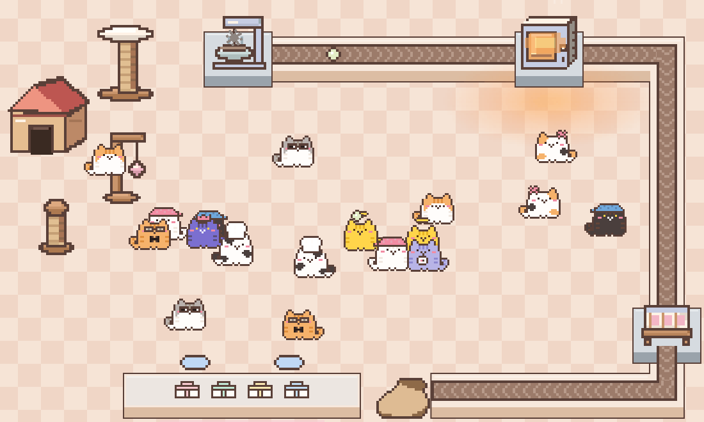
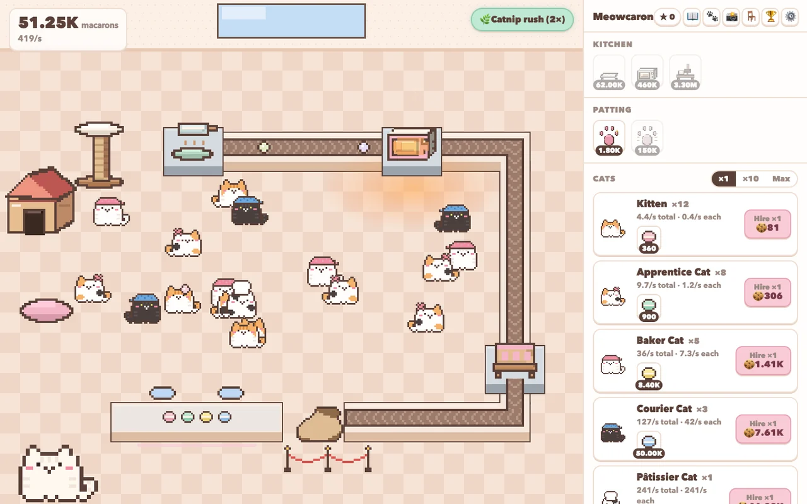
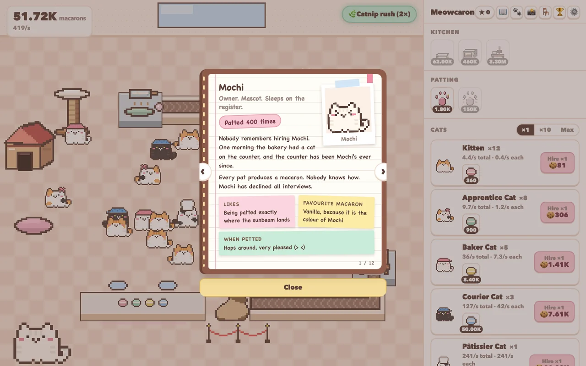
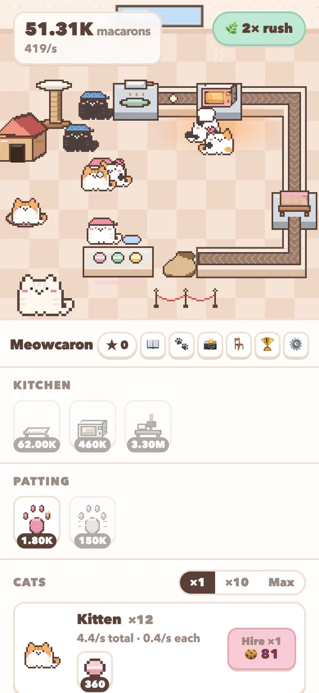

yore.tw
yore.tw
Meowcaron 喵卡龍
一款由貓咪經營馬卡龍店的療癒放置遊戲。
A cozy idle game about a macaron bakery run by cats.

▶ 開始遊戲▶ Play now遊戲介紹
About the game
這間小小的馬卡龍店，老闆是一隻圓滾滾的白貓，總是坐在店門口。拍拍店長，產線上就會滾出一顆馬卡龍。存夠了馬卡龍，就能雇用第一隻小貓，牠會自己開始幫忙烘焙。之後店會慢慢長大：學徒貓、烘焙貓、外送貓和甜點師貓陸續加入，廚房換上新機器，櫃台也排滿禮盒。
The owner of this little bakery is a round white cat who sits by the door. Pat the owner and a macaron rolls off the line. Save up enough macarons and you can hire your first kitten, who starts baking on its own. From there the shop grows: apprentices, bakers, couriers and pâtissiers join in, the kitchen gets new machines, and the counter fills up with gift boxes.
不過貓終究是貓。牠們會窩在暖暖的烤箱旁睡覺、跑去窗邊發呆、玩玩具，還會偷吃輸送帶上的馬卡龍。偷懶的貓會拖慢整間店的產量，點一下就能把牠叫醒；再點一下，就是摸摸牠。
Cats are still cats, though. They nap by the warm oven, stare out of the window, play with toys and sneak macarons off the belt. A slacking cat slows the whole shop down until you tap it awake. Tap it again and you give it a pat.
怎麼玩
How to play
- 點店長來做馬卡龍。
- Tap the owner to bake macarons.
- 用馬卡龍雇用貓咪。每隻貓都會自動烘焙。
- Spend macarons on cats. Every cat bakes automatically.
- 購買廚房和拍拍升級，讓產量翻倍。
- Buy kitchen and patting upgrades to multiply your output.
- 看到偷懶的貓就點牠叫醒，再點一次可以摸摸牠，短時間內提升產量。
- Tap a slacking cat to wake it up, then tap again to pet it for a short boost.
- 離開也沒關係，貓咪會在你不在的時候繼續烤幾個小時。
- Feel free to leave. The cats keep baking for a few hours while you are away.
- 店夠大的時候可以開新店。開新店會得到星星，每顆星都會永久提升之後每間店的產量。
- When the shop is big enough, open a new one. Each new shop earns stars, and every star permanently boosts all future shops.
操作方式
Controls
整個遊戲只需要點擊或觸控。在電腦上，商店面板在畫面右側；在手機上，面板在店面下方，用一隻手就能玩。
The whole game uses only clicks or taps. On a computer the shop panel sits on the right; on a phone it sits below the bakery, so you can play with one hand.
遊戲特色
Features
小技巧
Tips
- 先把偷懶的貓叫醒再升級，產量會比較高。
- Wake the slackers before you buy upgrades. The shop produces more with everyone at work.
- 烤箱旁邊很溫暖，常常有貓在那裡睡覺。
- The spot by the oven is warm, so cats often nap there.
- 每隔幾個小時回來看看最划算。離開太久，貓咪就會打瞌睡，產量也會變慢。
- Checking in every few hours works best. If you stay away too long, the cats doze off and baking slows down.
遊戲畫面
Screenshots






更新紀錄
Updates
- 2026 年 11 月：公開測試版上線。加入繁體中文與英文、新手教學、家具、偷懶與叫醒、離線烘焙，以及開新店。
- November 2026: public beta. Traditional Chinese and English, a short tutorial, furniture, slacking and waking, offline baking, and new shops.